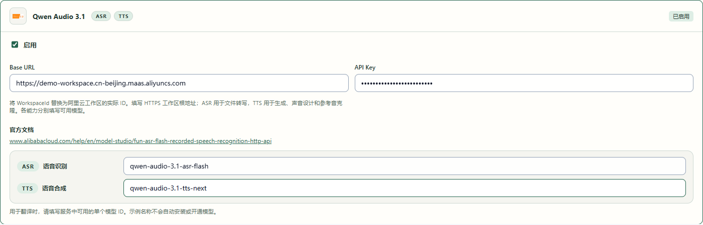
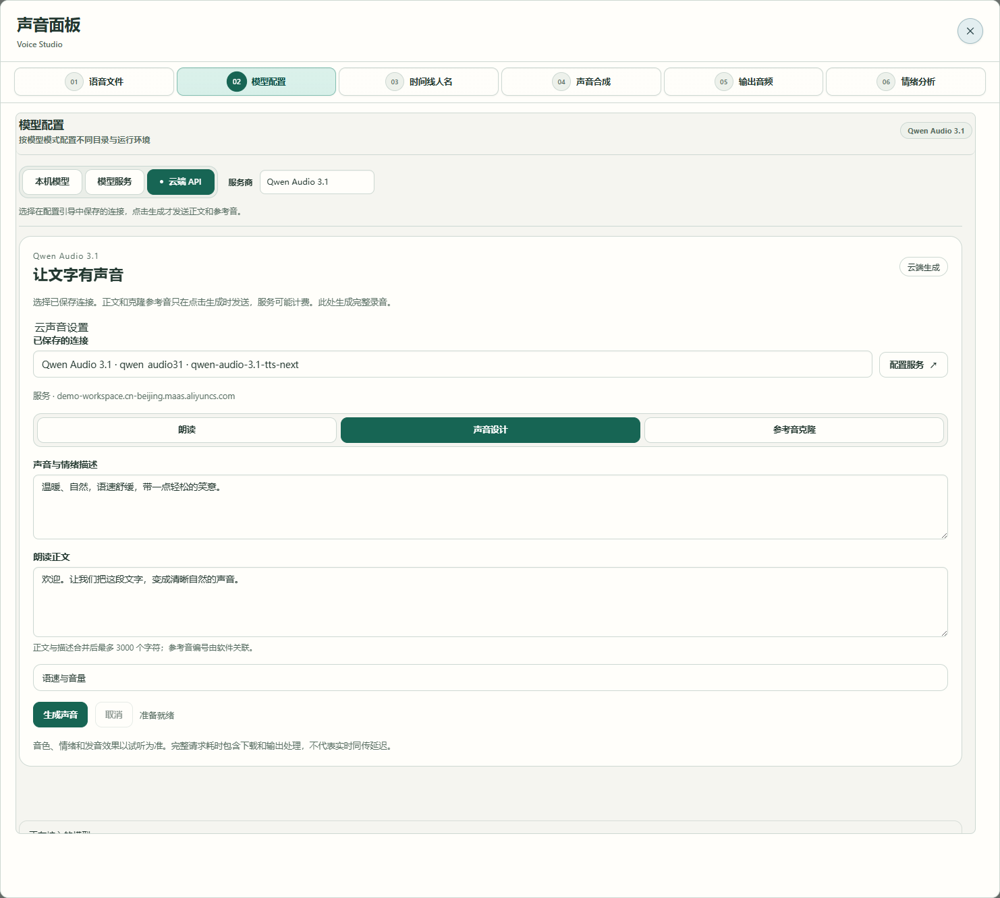
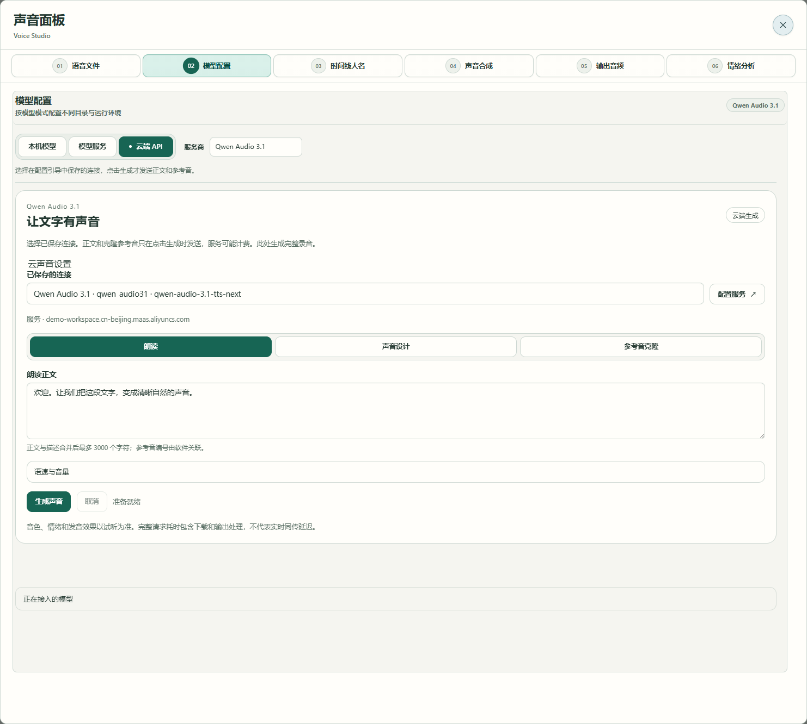
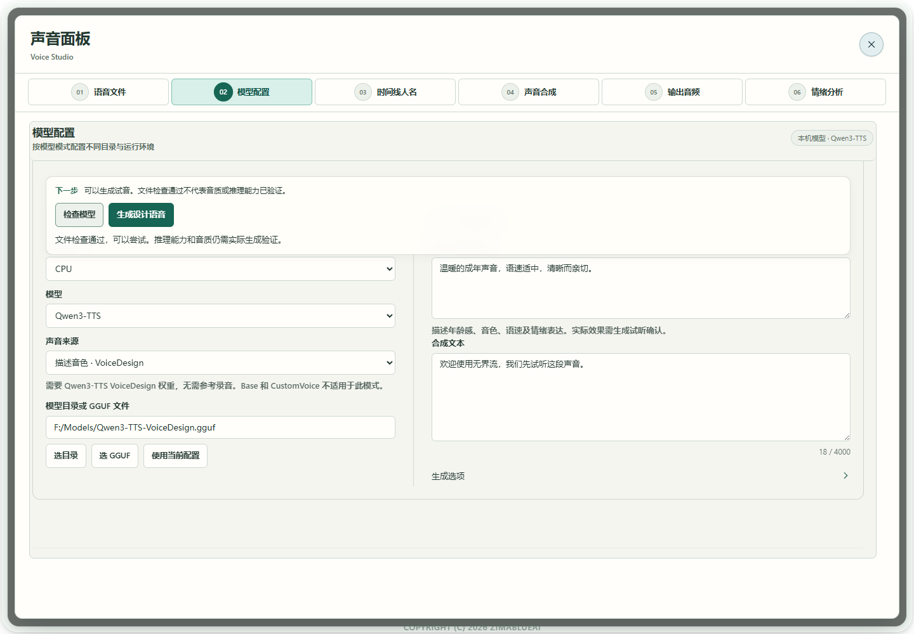
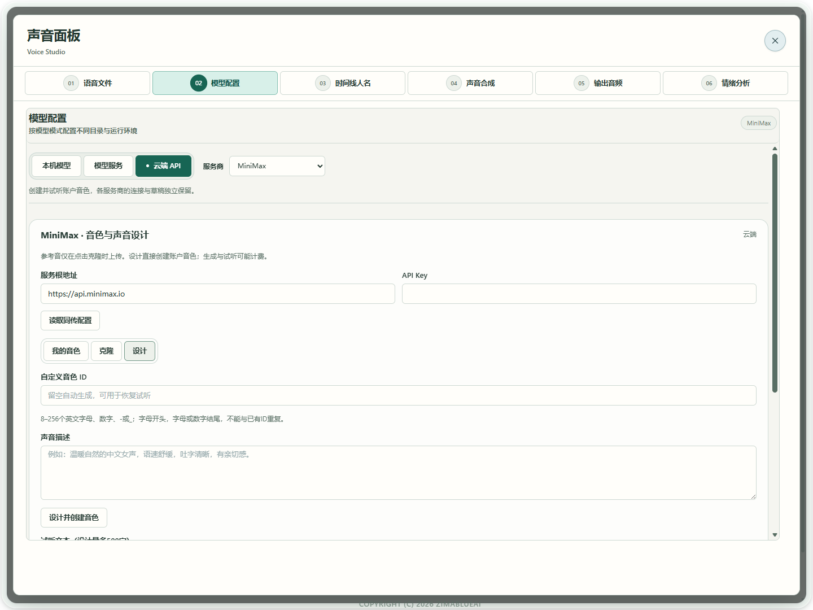

场景教程
没有参考音，也能设计声音
描述希望听见的音色，为讲解或播报制作试音。
你能得到什么
生成并试听一个设计声音，满意后保存音频或加入音色库。
开始前准备
- 本机选择 Qwen3-TTS VoiceDesign 对应模型包；Base 和 CustomVoice 不能代替 VoiceDesign。
- 或使用已配置且有创建音色权限的 MiniMax 云端 API；云端表单与本机表单分别配置。
- 声音描述及一段短试音文字；本功能不需要参考录音。
使用 Qwen 云端设计与朗读
Qwen Audio 3.1 可以根据文字描述生成声音，不需要参考录音或本机声音模型。需要账户开通对应模型权限；点击生成会发送正文和描述，服务可能计费。生成的是完整录音，音色与情绪效果请以试听为准。
- 01
保存一个可用的云端连接
打开「配置引导页」的 API 服务步骤，搜索并启用 Qwen Audio 3.1。填写
https://{WorkspaceId}.cn-beijing.maas.aliyuncs.com，把括号部分替换为账户中的实际 WorkspaceId，不加接口路径、端口或/v1。填写 API Key，并在语音合成模型项填写qwen-audio-3.1-tts-next，保存配置。识别模型项仍保留已有配置；这里无需下载本机模型。
真实软件界面；工作区与参考音为示例，未调用云服务。点击放大。 - 1填账户中的实际 WorkspaceId 根地址，不附加接口路径。
- 2填写自己的 API Key；图中仅为本地示例。
- 3在 TTS 合成模型项填 qwen-audio-3.1-tts-next；ASR 识别项独立保留。
- 02
选「声音设计」，分开填写描述与正文
打开「语音工具 → 模型配置 → 云端 API」，选择 Qwen Audio 3.1，在「已保存的连接」中选择连接，再点击「声音设计」。「声音与情绪描述」写你希望听见的音色、语气和节奏，例如「温暖、自然，语速舒缓，带一点轻松的笑意」；「朗读正文」写实际要读的话。两部分合并后最多 3000 个字符，不填参考音编号、制表符等控制字符。

真实软件界面；工作区与参考音为示例，未调用云服务。点击放大。 - 1选择已保存的 Qwen TTS 连接。
- 2选「声音设计」，不需要参考录音。
- 3描述音色、语气与节奏，和朗读正文分开填写。
- 4填写要读的正文，正文与描述合并后最多 3000 个字符。
- 5生成后试听；描述效果与发音以实际音频为准。
- 03
先试一句，再调整描述
点击「生成声音」，等待播放器出现后试听。需要调整时修改描述，重新生成；满意后点击「下载 WAV」，或保留到 A/B 比较。需要时展开「语速与音量」。点击「取消」后等任务收尾，再改参数。该功能生成试听录音，不会自动创建账户音色 ID，也不直接接入实时同传。
- 04
只需要朗读时选「朗读」
选择「朗读」，填写正文后点击「生成声音」。此模式不发送声音描述或参考音；同样可以试听并下载 WAV。需要使用某个人的参考音时，转到参考音克隆教程。

真实软件界面；工作区与参考音为示例，未调用云服务。点击放大。 - 1选择配置引导中保存的连接，无需再次填写地址或密钥。
- 2选「朗读」，只发送正文。
- 3这里填写要读的实际正文。
- 4点击生成才调用云服务；完成后试听并下载 WAV。


使用本机模型与其他服务
- 01
选择声音设计及对应模型
先在「配置引导页 → 模型库」保存匹配的 Qwen3-TTS VoiceDesign 目录或 GGUF、规格及量化。打开「语音工具 → 模型配置 → 本机模型」，选择已保存模型，将「声音来源」设为「描述音色 · VoiceDesign」。使用页面只需选择，不用再填路径。

真实软件界面 · 点击放大；图中示例数据不代表你的结果 - 1VoiceDesign需要声音描述和合成文本。
- 2生成设计语音后试听确认。
- 02
写声音特征，再写要朗读的内容
在「音色与表达描述」写希望听见的年龄感、音色、语速与语气，例如「温暖平静的中文女声，吐字清晰，语速舒缓」。在「合成文本」写实际要朗读的内容。两者分别填写。
真实软件界面 · 点击放大；图中示例数据不代表你的结果 - 1VoiceDesign需要声音描述和合成文本。
- 2生成设计语音后试听确认。
- 03
检查后生成并试听
在编辑区上方固定操作区点击「检查模型」，按「下一步」补齐文件或组件。检查通过、描述与文本填写完成后，点击同一操作区的「生成设计语音」，不需要参考录音。等待生成完成，试听读音、语速和表达；运行中可在这里「取消任务」。描述改变后重新生成。文件检查不是试音或推理预热；声音设计不需要先点击克隆用的可选提前加载。
真实软件界面 · 点击放大；图中示例数据不代表你的结果 - 1VoiceDesign需要声音描述和合成文本。
- 2生成设计语音后试听确认。
- 04
保存满意的版本，或用云端设计
满意后点击「保存音频」，或填写名称「保存到音色库」。云端路径在「云端 API → MiniMax」的设计页：填写描述、试音文本后创建，试听并检查返回的音色 ID，再应用到语音配置。

真实软件界面 · 点击放大；图中示例数据不代表你的结果 - 1写出你希望听到的声音特征。
- 2填写试听文字。
- 3确认描述后创建音色。


怎么知道成功
能播放生成结果；声音符合你的试听判断；保存文件可打开，或音色库中出现有名称的新条目。
遇到问题
看不到已保存的 Qwen 连接
回到配置引导，确认服务已启用、WorkspaceId 根地址与 API Key 正确，语音合成模型填写 qwen-audio-3.1-tts-next。只配识别模型不能用于合成；已删除、禁用或不完整的连接不会出现在选择列表。
云端生成未完成
检查连接、账户模型权限与正文长度。克隆时选择未归档、1–30 秒的单人参考音。正文和描述只用普通文字与换行，不写参考音编号或制表符。取消后等任务收尾，再重试。
声音来源不可选／任务不匹配
确认使用 VoiceDesign 而不是 Base 或 CustomVoice，重新选择匹配目录。模型支持描述设计不表示软件所有适配都已开放。
保存音色提示时长不合格
克隆参考必须 1–60 秒；调整试音文本重新生成。原结果仍可试听和保存音频，不补静音凑时长。
云端创建失败
检查创建音色权限及任务状态，确认没有成功创建后再重试，避免重复创建。